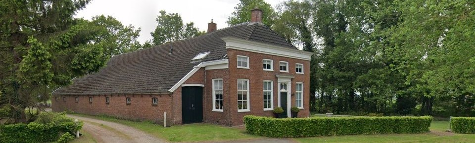

De Boerderij
In 1830 werd een gemengd bedrijf aan Ommelanderwijk 164 opgericht. Na bijna 2 eeuwen is dit familiebedrijf nog steeds in handen van de nazaten. Het inmiddels volledig akkerbouwbedrijf is in handen van Jaap Nieboer een van de drie oprichters in de nieuwe distilleerderij.
Het kleine 40 ha tellende akkerbouwbedrijf is modern, de laatste jaren wordt gewerkt volgens natuurinclusieve landbouw principes waarbij bodem en natuur centraal staan. Te denken valt aan niet kerende grondbewerkingen, overhoeken teruggeven aan de natuur, minimale gewasbescherming, etc. Tevens wordt bewust gestreefd om kringlopen kort en lokaal te houden; lokaal betrekken en afzetten verdient op alle fronten de voorkeur. Vooral dit laatste is de inspiratiebron geweest om na te denken hoe lokaal verbouwde typisch veenkoloniale gewassen in eigen beheer nog beter tot een uniek product vermarkt kunnen worden. Ruim een jaar geleden ontstond het idee een distilleerderij te beginnen waarbij eigen verbouwd graan, suikerbieten en aardappelen tot hoogwaardige alcohol wordt ‘gestookt’. In de boerderij zijn nog een oude koeienstal en een oude paardenstal te zien. In de oude koeienstal worden de vaten opgeslagen en de oude paardenstal zal te zijner tijd worden ingericht als bezoekerscentrum.
De naam Ommelanderwijk (De Wieke) verwijst naar de streek de Ommelanden. In de begintijd van de grootschalige vervening in de Groningse Veenkolonien lag het initiatief bij particuliere bedrijven. Een aantal ondernemende jonkers uit de Ommelanden wilden ook hun geluk in de wilde venen beproeven en zij begonnen in 1653 met het graven van de Ommelanderwijk. Vanaf de wijk liepen in de tijd van de turfwinning op regelmatige afstand in- of zijwijken. Deze werden genummerd, Numero Dertien bestaat nog steeds. De wijk werd in 1968 gedempt.
Arend van Nieuwland
Oprichter Wieke Distillers
Een echte (baby)boomer geboren in 1946 als oudste van 7 kinderen in Breda en in zijn jeugd ondergedompeld in het Rijke Roomse leven. Zoon van een kruidenier een vak dat inmiddels uitgestorven is. Na de HBS-B afgestudeerd in Chemische Technologie aan de Technische Hogeschool Eindhoven. Na zijn militaire dienst werkzaam geweest in de olie en gasindustrie bij Aramco in den Haag en Saudi Arabië en bij Shell in Brunei en de NAM in Assen. Ook na zijn pensionering bij Shell in 2009 nog werkzaam geweest in de olie industrie bij Tullow, en PMI (Petroleos Mexicanos) Holdings. En een groot whisky liefhebber. Samen met zoon en schoonzoon in 2019 het avontuur gestart een kleine craft distillery op te richten in de boerderij van zijn schoonzoon.
Jaap Nieboer
Oprichter Wieke Distillers
Geboren in 1978 en opgegroeid op het familie akkerbouwbedrijf in Ommelanderwijk (De Wieke). Na de middelbare school afgestudeerd in Technische Planologie op de Faculteit Ruimtelijke Wetenschappen aan de Rijksuniversiteit Groningen. Na deze studie bij het Kadaster beland en is hier nog steeds als projectleider gebiedsinrichting werkzaam. In 2007 werd een maatschap aangegaan met vader en in 2014 werd het akkerbouwbedrijf volledig overgenomen. Zijn passie voor de akkerbouwgewassen en de veelzijdigheid van deze gewassen hebben geleid tot het opstarten van Wieke Distillers. Woont samen met vrouw en twee dochters.
Arend van Nieuwland
Oprichter Wieke Distillers
Geboren in 1980 in Den Haag. Woont in Hoogeveen en na zijn studie (informatica) altijd in de productie gewerkt. Onder andere als procesoperator bij een farmaceut tot eind 2020. Bekend met GMP-regels en opgeleid tot farmaceutisch vakman heeft hij nog een korte cursus sociale hygiëne gevolgd.